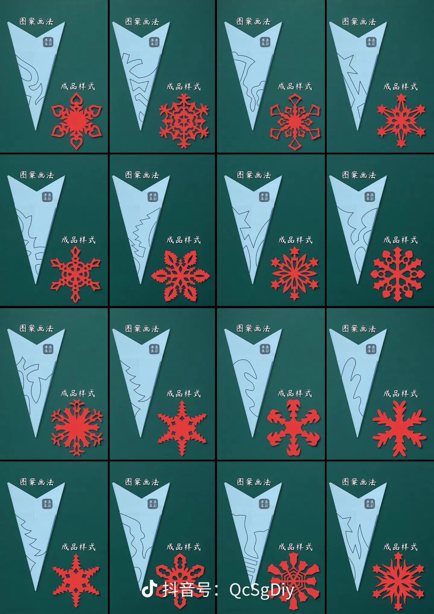
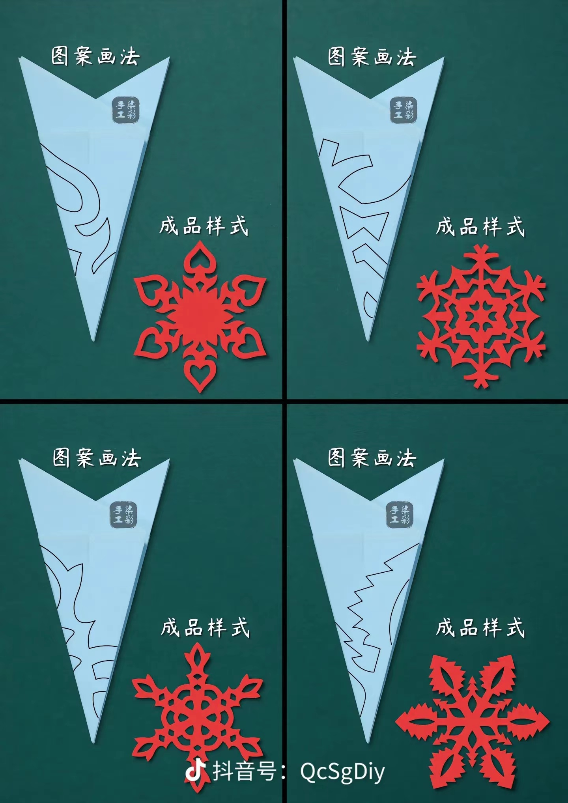
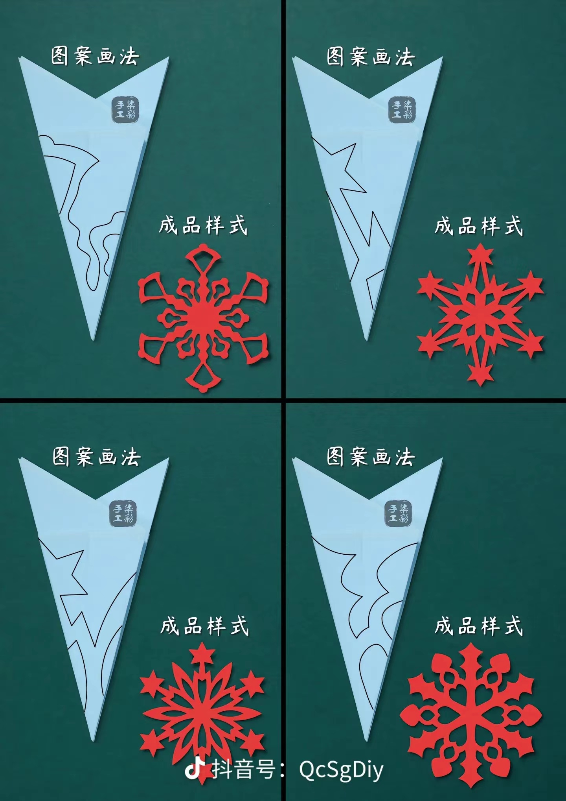
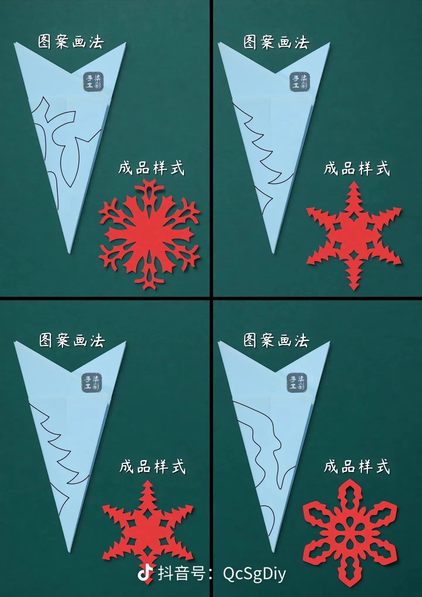

剪纸基本技法教程
掌握剪纸艺术的基本技法，为创作优秀作品打下坚实基础。
传统剪纸基本技法

单剪技法
最基础的剪纸技法，直接在单层纸上剪刻图案。
特点
- 操作简单直观
- 适合初学者入门
- 便于表现自由图案
制作步骤
- 准备单层纸张
- 绘制完整图案
- 按线条剪切
- 修整完善细节

折剪技法
通过折叠纸张来制作对称图案的技法。
特点
- 可制作对称图案
- 提高制作效率
- 适合制作重复纹样
制作步骤
- 对折纸张
- 在折边处画图
- 沿线剪切
- 展开完成

镂空技法
通过剪切出空白部分来形成图案的技法。
特点
- 具有通透效果
- 层次感强
- 适合制作精细图案
制作步骤
- 设计镂空部分
- 由大到小剪切
- 注意留出连接点
- 整体修整完善

叠剪技法
通过多层纸张叠加制作立体效果的技法。
特点
- 具有立体感
- 层次丰富
- 色彩可变化
制作步骤
- 准备多层纸张
- 分层设计图案
- 逐层剪切
- 叠加组合
技法要点提示
- 选择合适的纸张材质和工具
- 保持剪刀锋利，确保剪切线条流畅
- 注意图案的连接点和结构稳定性
- 合理运用不同技法的特点
- 保持耐心，细心完成每个步骤
工具使用技巧
✂️ 剪刀使用
- 选择适合手型的剪刀
- 保持剪刀锋利度
- 剪切时保持稳定的力度
- 注意剪刀与纸面的角度
📏 辅助工具
- 使用铅笔轻轻画线
- 尺子辅助画直线
- 圆规帮助画圆形
- 橡皮擦除多余线条
常见问题与解决方法
❌ 剪切不平整
现象：剪切边缘呈锯齿状或不平整
- 确保剪刀足够锋利
- 保持剪切时的稳定性
- 避免用力过猛
❌ 图案不对称
现象：展开后图案两边不对称
- 仔细检查折痕是否对齐
- 剪切时保持纸张固定
- 画线时注意对称性
❌ 连接处断裂
现象：图案容易在细节处断裂
- 预留足够的连接点
- 控制连接处的宽度
- 避免过于复杂的细节
进阶建议
🔄 技法组合
学会将不同的基本技法组合使用，创造出更丰富的作品效果
📐 构图布局
注意画面的整体平衡，合理安排图案的疏密关系
💡 创新思维
在掌握基本技法的基础上，尝试创新和改良，发展个人风格